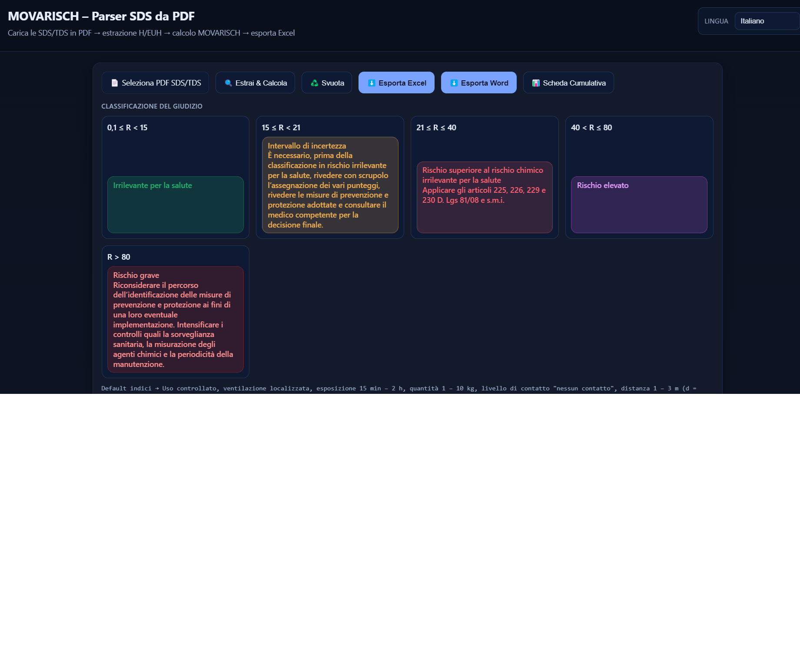

Importazione PDF
Organizza classificazione del prodotto, ingredienti e indicazioni DPI dalle sezioni pertinenti della scheda.
PER WINDOWS · ELABORAZIONE LOCALE
Importa le SDS in PDF, controlla le informazioni estratte e organizza la valutazione del rischio chimico secondo il modello pubblico MoVaRisCh. Esporta i risultati in Excel e Word.
Scopri KEMIVAL in Microsoft Store ↗Acquisto, diritto di utilizzo e aggiornamenti tramite Microsoft Store.
UN PERCORSO DI LAVORO COMPLETO
Organizza classificazione del prodotto, ingredienti e indicazioni DPI dalle sezioni pertinenti della scheda.
Controlla le estrazioni e le condizioni d’uso prima di confermare la valutazione. Il professionista mantiene il controllo del risultato.
Applica il percorso MoVaRisCh per il rischio salute e distingue gli agenti che richiedono il percorso specifico CMR.
Esporta le valutazioni e il riepilogo cumulativo in formati modificabili, per proseguire il lavoro professionale.

Interfaccia di lavoro KEMIVAL. I risultati dipendono dai dati della SDS e dalle condizioni operative inserite.
Il software è uno strumento di supporto alla valutazione professionale. Non sostituisce gli obblighi del datore di lavoro o il giudizio del professionista incaricato.
UN SOLO PUNTO DI ACCESSO
Acquisto unico dell’app completa. Consulta nello Store il prezzo corrente, i requisiti e le condizioni applicabili prima di confermare l’acquisto. Il diritto di utilizzo è associato al tuo account Microsoft.
Non servono pagamenti sul sito o chiavi da ricevere via email.
Apri la scheda Microsoft Store e segui la procedura mostrata da Microsoft. Usa lo stesso account per ritrovare il diritto di utilizzo e reinstallare il prodotto nei limiti delle condizioni applicabili.
No. Nella distribuzione Store il programma verifica il diritto di utilizzo tramite i servizi Windows di Microsoft Store.
KEMIVAL elabora i PDF e i dati delle valutazioni localmente. La connessione può essere necessaria per acquisto, installazione, aggiornamenti e verifiche della licenza. L’eventuale invio di allegati all’assistenza avviene soltanto su iniziativa dell’utente.
Windows 10 versione 2004 o successiva, architettura x64, e Microsoft Store. I requisiti aggiornati sono indicati nella scheda Store.
Scrivi a atis.giuseppe@gmail.com per problemi tecnici. Per pagamenti, ricevute e richieste di rimborso usa le procedure del tuo account Microsoft e le condizioni applicabili.